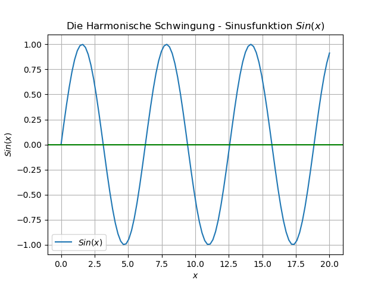
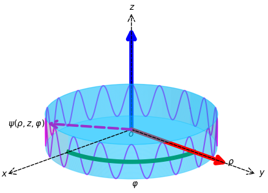
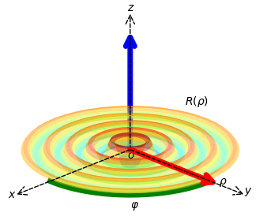
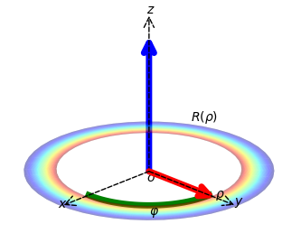

Arbeitsproben
Table of Contents
- Numerische Berechnungen von Elektro-magnetischen Phänomenen
- Die harmonische Störung des dielektrischen Feldes
- Lösung der Wellengleichung in endlichen Geometrien
- Bestimmte Harmonische: Flüstergaleriemoden
- Numerische Approximation
- TODO Besser erklären: Konzeptzeichnung bzw. Beispielcode. shoshin
Numerische Berechnungen von Elektro-magnetischen Phänomenen
Auf dieser Site stelle ich vor, wie ein physikalisches Phänomen - nämlich die Lichtausbreitung in dielektrischen, runden Resonatoren und wie sie mathematisch beschrieben werden kann. Dabei kommen Theorie und Code-Beispiele zum Einsatz. Im Resultat werden Lösungen von Differentialgleichungen mit einem numerischen Verfahren vorgestellt. Hinweis: momentan ist dieser Code noch in einem anderen Repository. Das Phänomen, welches hier maßgeblich beschrieben werden soll, ist das Phänomen der Flüstergaleriemoden.
Die harmonische Störung des dielektrischen Feldes
Zunächst wird im Zuge auf die Ausbreitung des Lichts festgelegt, dass nur harmonische Veränderungen des Feldes betrachtet werden. D.h. dass periodische Veränderungen des Feldes durch Sinus- und Cosinusfunktionen beschrieben werden können. Mathematisch generell “gesprochen” kommen die periodischen Schwinungen aus der Wellengleichung:
\begin{equation} \Delta\mathbf{E} - \frac{1}{c_{m}^{2}}\frac{\partial^{2}E}{\partial t^{2}} = 0 \end{equation}| \(\Delta\) | Laplace-Operator |
| \(\mathbf{E}\) | Elektrische Feld |
| \(c_{m}\) | Lichtgeschwindigkeit im Medium |
| \(\mathbf{k}\) | Wellenvektor |
| \(j\) | Imaginäre Einheit |
| \(\mathbf{r}\) | Ortsvektor |
| \(\omega\) | Kreisfrequenz: \hspace{.5mm} \(2\pi f\) |
| \(t\) | Zeiteinheit |
Allgemein kann das elektrische Freie Feld über folgenden algebraischen Ausdruck zusammengefasst werden:
\begin{equation} \mathbf{E} (\mathbf{r},t) = E(\mathbf{z},t) = E_{0}\exp{j\mathbf{k}\cdot\mathbf{r}-j\omega t} \end{equation}Codebeispiel: Die Sinusfunktion eine Lösung des freien Feldes
Eine einfache Lösung der Wellengleichung ist die Sinusfunktion. Durch diese können periodische Schwankungen am Ort oder in der Zeit beschrieben werden.
import numpy as np import matplotlib matplotlib.use('Agg') import scipy.special as sp import matplotlib.pyplot as plt x = np.linspace(0, 20, 100) for n in range(1): y = np.sin(x); plt.plot(x,y,label=r'$Sin(x)$') plt.axhline(0,color='green', label='_nolegend_') plt.grid() plt.legend() plt.xlabel('$x$') plt.ylabel('${Sin}(x)$') plt.title(r'Die Harmonische Schwingung - Sinusfunktion $Sin(x)$') plt.savefig('img/matplot-fig.png') return 'img/matplot-fig.png'

Figure 1: Eine 1D-Sinusfunktion
Lösung der Wellengleichung in endlichen Geometrien
Zu Beginn des Textes wurde die Wellengleichung ohne große Einschränkungen gelöst. In realen Systemen ist so eine Lösung ungenau. In einem unendlich großen störungsfreien Raum, stellt die 1D-Sinusfunktion eine gültige Lösung dar.
Für endliche Räume müssen weitere Berücksichtigungen getroffen werden. Eine einfache Geometrie für Resonatoren ist ein Zylinder. Ein Zylinder hat schon 3-Raumkoordinaten. Um die periodische Störung zu lösen müssen entsprechend dieser Raumkoordinaten Funktionen gefunden werden, die den Zylinderraum vollständig beschreiben können.
Potential in einem Zylinder
Da eine Störung eine Veränderung herbeiführt, wird ein Differentialoperator auf eine Größe \(\psi\) angewandt. Dieser beschreibende Veränderungsoperator berücksichtigt die 3-Raumrichtungen und hat folgende Funktionsvorschrift:
\begin{equation}\label{eqn:ZylinderWelle} -\frac{1}{2}\Big[ \frac{1}{\rho} \frac{\partial}{\partial \rho} \Big( \rho \frac{\partial}{\partial \rho} \Big) + \frac{1}{\rho^{2}}\frac{\partial^{2}}{\partial \varphi^{2}} + \frac{\partial^{2}}{\partial z^{2}} \Big] \psi = L\psi \end{equation}Bestimmte Harmonische: Flüstergaleriemoden
Flüstergaleriemoden sind auch bestimmte Harmonische Störungen im Raum. Sie sind an der Seitenwand eines Resonators zu verorten. Ihre Entdeckung beruht auf einer akustischen Beobachtung von Schallwellen, die an der Wand einer Kuppel reflektiert werden, d.h. die Schallausbreitung findet über Reflektion der Schallwellen an der Kuppelwand statt. Ist die Wellenlänge sind bestimmte Größen des System bekannt, dann Eine Wellenzahl - oder auch ein quantisierter Zustand der Harmonischen Störung bestimmt werden.
Allgemeine Funktion der 3D-Wellengleichung
Im Besten Fall kann eine Wellenfunktion gefunden werden, die sich aus 3 einzelnen Funktionen entsprechend der Raumkoordinaten zusammensetzt. Ohne große Überlegung kann die Funktion folgendermaßen geschrieben werden:
\begin{equation}\label{eqn:ZylinderPotential} \psi = R(\rho)Z(z)\Phi(\varphi). \end{equation}In den folgenden Abschnitte werden diese Funktionen einzeln betrachtet.
Die Azimutale Funktion
Als erstes lässt sich relativ einfach die azimutale Funktion bestimmen. Die Azimutale Funktion umläuft den Zylinder. Folgendes Codebeispiel veranschautlicht diese.
Codebeispiel: Azimutale Funktion
import numpy as np import matplotlib matplotlib.use('Agg') from matplotlib.patches import FancyArrowPatch from mpl_toolkits.mplot3d import proj3d import mpl_toolkits.mplot3d.art3d as art3d from mpl_toolkits.mplot3d import Axes3D from matplotlib.patches import Circle from matplotlib import pyplot as plt #Define a class for the coordinate-system class Arrow3D(FancyArrowPatch): def __init__(self, xs, ys, zs, *args, **kwargs): super().__init__((0,0), (0,0), *args, **kwargs) self._verts3d = xs, ys, zs def do_3d_projection(self, renderer=None): xs3d, ys3d, zs3d = self._verts3d xs, ys, zs = proj3d.proj_transform(xs3d, ys3d, zs3d, self.axes.M) self.set_positions((xs[0],ys[0]),(xs[1],ys[1])) return np.min(zs) #This Function will draw a cylinder def plot_3D_cylinder(radius, height, elevation=0, resolution=100, color='b', x_center = 0, y_center = 0): #init where to draw the projections fig=plt.figure(figsize=(5,5)) ax = Axes3D(fig, azim=45, elev=21) #take values from the function input x = np.linspace(x_center-radius, x_center+radius, resolution) z = np.linspace(elevation, elevation+height, resolution) X, Z = np.meshgrid(x, z) theta = np.linspace(-1 * np.pi, 1 * np.pi, 1000) #coordinate conversion cartesain x_,y_,z_ in cylindrical R = 1 x_ = radius * np.cos(theta)+x_center y_ = radius *np.sin(theta)+y_center z_ = np.sin(18*theta) Y = np.sqrt(radius**2 - (X - x_center)**2) + y_center # Pythagorean theorem #Color the cylinder surface-patches ax.plot_surface(X, Y, Z,alpha=0.3, linewidth=0, color='deepskyblue') ax.plot_surface(X, (2*y_center-Y), Z,alpha=0.2, linewidth=0, color='lightskyblue') floor = Circle((x_center, y_center), radius, color='deepskyblue',alpha=0.3) ax.add_patch(floor) art3d.pathpatch_2d_to_3d(floor, z=elevation, zdir="z") #Color the circle-surfaces ceiling = Circle((x_center, y_center), radius, color='deepskyblue',alpha=0.5) ax.add_patch(ceiling) art3d.pathpatch_2d_to_3d(ceiling, z=elevation+height, zdir="z") #Plot the encircling function ax.plot(x_, y_, z_, color = 'fuchsia') arrow_prop_dict = dict(mutation_scale=20, arrowstyle='->', shrinkA=0, shrinkB=0) #Add an arrow that outlines the function's path a = Arrow3D([0, 79], [0, 15], [0, 2.8], **arrow_prop_dict, color='darkorchid', linestyle="dashed",linewidth=3.0) ax.add_artist(a) #Add a red orthogonal arrow in the \rho respectively y-direction a = Arrow3D([0, 0], [0, 75], [0, 0], **arrow_prop_dict, color='red',linewidth=5.0) ax.add_artist(a) #Add a black arrow indicating the y-cartesain coordinate a = Arrow3D([0, 0], [0, 95], [0, 0], **arrow_prop_dict, color='black',linestyle="dashed",linewidth=1.0) ax.add_artist(a) #Add a black arrow indicating the x-cartesain coordinate a = Arrow3D([0, 95], [0, 0], [0, 0], **arrow_prop_dict, color='black',linestyle="dashed",linewidth=1.0) ax.add_artist(a) #Add a black arrow indicating the z-direction a = Arrow3D([0, 0], [0, 0], [0, 6.8], **arrow_prop_dict, color='black',linestyle="dashed",linewidth=1.0) ax.add_artist(a) #Add a blue arrow indicating the z-direction a = Arrow3D([0, 0], [0, 0], [0, 6], **arrow_prop_dict, color='blue',linewidth=5.0) ax.add_artist(a) #add letters for orientation o-origin, \rho etc. ... ax.text(3, 0.0, -.35, r'$o$') ax.text(0, 75, 0, r'$\rho$') ax.text(60, 60, 0, r'$\varphi$') ax.text(0, -2, 7, r'$z$') ax.text(107, 15, 3.4, r'$\psi(\rho,z,\varphi)$') ax.text(100, 0, 0, r'$x$') ax.text(0, 98, 0, r'$y$') #Now draw the \varphi-axis *hint: it's angle dependent 'cause it's a cylinder thetaAng = np.linspace(0,np.pi/2,100) # 0 <= θ <= 2π rAng = 50.0 #circle radius x1 = rAng * np.cos(thetaAng) + 0 x2 = rAng * np.sin(thetaAng) + 0 #Plot this axis as a function and make it green ax.plot(x1, x2, color='g',linewidth=5.0) #name the axis ax.set_xlabel('x-Achse', fontsize=16) ax.set_ylabel('y-Achse', fontsize=16) ax.set_zlabel('z-Achse', fontsize=16) #set a limit on the z-axis/**sorry it's messy <2023-03-02 Thu> shoshin ax.set_zlim(-4,4) #clean the canvas no grid whatsoever or other oob stuff ax.xaxis.pane.fill = False ax.yaxis.pane.fill = False ax.zaxis.pane.fill = False ax.xaxis.pane.set_edgecolor('w') ax.yaxis.pane.set_edgecolor('w') ax.zaxis.pane.set_edgecolor('w') ax.grid(False) font = {'family' : 'sans-serif', 'weight' : 'normal', 'size' : 20} plt.rc('font', **font) #fig.suptitle("Zylindrische Kavität", fontsize=25) plt.axis('off') #fig.savefig('ZylinderSystem.png', dpi=320) plt.show() #create a figure for plotting fig = plt.figure() #create a 3d ax-element ax = fig.add_subplot(111, projection='3d') #adjust view on the art-piece ax.view_init(azim=-90, elev=90) ax.set_axis_off() plt.show() # Write parameters to be passed to above cylinder function radius = 50 height = 2 elevation = -1 resolution = 100 color = 'lightskyblue' x_center = 0 y_center = 0 # pass the parameter plot_3D_cylinder(radius, height, elevation=elevation, resolution=resolution, color=color, x_center=x_center, y_center=y_center) #save the figure plt.savefig('img/matplot-azimuthal.png') #return 'img/matplot-azimuthal.png'

Figure 2: Die azimutale Funktion beschreibt die Umlaufrichtung
| \(m\) | Azimutale Quantenzahl |
| \(r\) | Radius |
| \(n_{m}\) | Brechungsindex |
Der mathematische Ausdruck ist im Vergleich zum oberen Codebeispiel ziemlich unspektakulär:
\begin{equation} \Phi(\varphi) = e^{(jm \varphi)} \end{equation}Funktion der Z-Koordinate bzw. der Höhe
Für die Funktion \(Z(z)\) ergeben sich unterschiedliche Funktionen. Symmetrische, auch als unsymmetrische Funktionen. Das Liegt daran, dass sowohl Cosinus als auch Sinus zulässig sind.
\begin{equation} Z(z) = \left\{\begin{array}{lr} A \exp\Big(\sqrt{k_{eff}^{2} -k_{0}^{2}}z\Big), & \text{für } z < - \bigg(\frac{h}{2}\bigg) .\\ B cos\Big(\sqrt{k_{i}^{2} -k_{eff}^{2}}z \Big), & \text{für } |z| < \bigg(\frac{h}{2}\bigg) ,\\ A \exp\Big(-\sqrt{k_{eff}^{2} -k_{0}^{2}}z\Big), & \text{für } z > \bigg(\frac{h}{2}\bigg) \end{array}\right. \end{equation}und unsymmetrischen Lösungen:
\begin{equation} Z(z) = \left\{\begin{array}{lr} A \exp\Big(\sqrt{k_{eff}^{2} -k_{0}^{2}}z \Big), & \text{für } z < -\bigg(\frac{h}{2}\bigg) .\\ B sin\Big(\sqrt{k_{i}^{2} -k_{eff}^{2}}z \Big) , & \text{für } |z| < \bigg(\frac{h}{2}\bigg) ,\\ - A \exp\Big(-\sqrt{k_{eff}^{2} -k_{0}^{2}}z\Big), & \text{für } z > \bigg(\frac{h}{2}\bigg). \end{array}\right. \end{equation}| \(k_{eff}\) | effektive Wellenzahl einer Mode |
| \(k_{i}\) | Wellenzahl im Festkörper |
| \(k_{0}\) | Wellenzahl im Vakuum |
| \(h\) | Höhe eines Resonators |
Die Höhe \(h\) gibt die Randbedingung für die Gültigkeit der Sinus/Cosinus Funktion für die $Z$-Koordinate wieder. Jenseits einer gegebenen Höhe sind andere Funktionen definiert, die mit zunehmendem/abnehmenden \(z\) exponential abfallen und gegen \(0\) gehen.
Codebeispiel für die vertikale Richtung
Die Radiale Funktion
Für die radiale Funktion \(R(\rho)\) ergibt sich durch die Separation der Variablen Bessels-Differentialgleichung.
\begin{equation}\label{eqn:PreBessel} \rho^{2}\Big( \frac{d^{2}R}{d \rho^{2}}\Big) + (\rho^{2}k^{2}-m^{2})R = 0 \end{equation}Durch die Substitution \(\mathbf{k \rho = x}\) ist der Ausdruck aus Gleichung als die allgemeine Form darstellbar.
\begin{equation} x^{2}\frac{d^{2}R}{dx^{2}}+\frac{dR}{dx}+(x^{2}-m^{2})R = 0 \end{equation}Diese Differentialgleichung kann durch Besselfunktionen und Hankelfunktionen erster Gattung gelöst werden. Das Innere des Resonators wird dabei durch Besselfunktionen beschrieben.
\begin{equation} R(\rho) = J_{m}\Big(\frac{k_{eff}\cdot \rho}{r}\Big), \hspace{0.5cm} \rho < r \end{equation}Codebeispiel der Besselfunktionen
Im Folgenden wird in Python ein Codebeispiel gezeigt, in welchem das Innere eines Resonators dargestellt wird. Es veranschaulicht eine radiale Veränderung des Elektromagnetischen Feldes.
Codebeispiel der radialen Funktion innerhalb des Resonators
import numpy as np import scipy.special as sp import matplotlib from scipy.special import hankel1e, y1_zeros from mpl_toolkits.mplot3d import Axes3D matplotlib.use('Agg') import matplotlib.pyplot as plt from matplotlib.patches import FancyArrowPatch from mpl_toolkits.mplot3d import proj3d #needed for 3D-coordinate system class Arrow3D(FancyArrowPatch): def __init__(self, xs, ys, zs, *args, **kwargs): super().__init__((0,0), (0,0), *args, **kwargs) self._verts3d = xs, ys, zs def do_3d_projection(self, renderer=None): xs3d, ys3d, zs3d = self._verts3d xs, ys, zs = proj3d.proj_transform(xs3d, ys3d, zs3d, self.axes.M) self.set_positions((xs[0],ys[0]),(xs[1],ys[1])) return np.min(zs) #using circular coordinates again! range of theta-axis is needed thetaAng = np.linspace(0,np.pi/2,100) # 0 <= θ <= 2π #assume the edge of the resonator to be rAng = 50 rAng = 50.0 x1 = rAng * np.cos(thetaAng) + 0 x2 = rAng * np.sin(thetaAng) + 0 #prepare the canvas and axis for the function fig=plt.figure(figsize=(5,5)) ax = Axes3D(fig, azim=45, elev=21) #create coordinate arrows for cylindrical and cartesian directions arrow_prop_dict = dict(mutation_scale=20, arrowstyle='->', shrinkA=0, shrinkB=0) a = Arrow3D([0, 0], [0, 70], [0, 0], **arrow_prop_dict, color='black',linestyle="dashed",linewidth=1.0) ax.add_artist(a) a = Arrow3D([0, 70], [0, 0], [0, 0], **arrow_prop_dict, color='black',linestyle="dashed",linewidth=1.0) ax.add_artist(a) a = Arrow3D([0, 0], [0, 0], [0, 0.8], **arrow_prop_dict, color='black',linestyle="dashed",linewidth=1.0) ax.add_artist(a) a = Arrow3D([0, 0], [0, 0], [0, 0.7], **arrow_prop_dict, color='blue',linewidth=5.0) ax.add_artist(a) a = Arrow3D([0, 0], [0, 55], [0, 0], **arrow_prop_dict, color='red',linewidth=5.0) ax.add_artist(a) #create the phi-coordinate ax.plot(x1, x2, color='g',linewidth=5.0) #add symbols for orientation ax.text(0, -2, -.06, r'$o$') ax.text(0, 55, 0, r'$\rho$') ax.text(45, 45, 0, r'$\varphi$') ax.text(0, -2, 0.81, r'$z$') ax.text(75, 0, 0, r'$x$') ax.text(0, 70, 0, r'$y$') ax.text(-20, 15, 0.25, r'$R(\rho)$') #create the bessel-function def drumhead_height(n, k, distance, angle, t): kth_zero = sp.jn_zeros(n, k)[-1] return np.cos(t) * np.cos(n*angle) * sp.jn(n, distance*kth_zero) #focus on the interesting part of the hankel function --outside the cylinder reminder: it's not defined inside theta = np.r_[0:2*np.pi:50j] radius = np.r_[0:50:50j] #transform cartesian coordinates into cylindrical ones x = np.array([r * np.cos(theta) for r in radius]) y = np.array([r * np.sin(theta) for r in radius]) z = np.array([drumhead_height(0,2, r, theta,1) for r in radius]) #plot the results outside ax.plot_surface(x[1:50], y[1:50], z[1:50], rstride=1, cstride=1, cmap='jet',alpha=0.5) #set axis names and labels ax.set_xlabel('x') ax.set_ylabel('y') ax.set_zlabel('z') ax.set_xlabel('Radius [$kR$]', labelpad=20 ,fontsize=16) ax.set_ylabel('Höhe [$hk$]', labelpad=20, fontsize=16) ax.set_zlabel('Höhe [$hk$]', labelpad=20, fontsize=16) ax.set_zlim3d(0,1) #strip the figure of unnecessary stuff ax.xaxis.pane.fill = False ax.yaxis.pane.fill = False ax.zaxis.pane.fill = False ax.xaxis.pane.set_edgecolor('w') ax.yaxis.pane.set_edgecolor('w') ax.zaxis.pane.set_edgecolor('w') font = {'family' : 'sans-serif', 'weight' : 'normal', 'size' : 20} plt.rc('font', **font) #fig.suptitle("Bessel", fontsize=25) plt.axis('off') fig.tight_layout(pad=1.0) #plt.title('Radiale Funktion', x=0.525, y=0.75) fig.savefig('./img/BRadialeFunktion.png') plt.show()

Figure 3: Die Besselfunktion beschreibt die radiale Veränderung der Wellenfunktion
Codebeispiel der radialen Funktion außerhalb des Resonators
Außerhalb der endlichen Geometrie des Resonator fallen die Ausprägungen des elektromagntischen Feldes stark ab. Durch Hankelfunktionen wird diesem Umstand mathematisch Rechung getragen.
import numpy as np import scipy.special as sp import matplotlib from scipy.special import hankel1e, y1_zeros from mpl_toolkits.mplot3d import Axes3D matplotlib.use('Agg') import matplotlib.pyplot as plt from matplotlib.patches import FancyArrowPatch from mpl_toolkits.mplot3d import proj3d #needed for 3D-coordinate system class Arrow3D(FancyArrowPatch): def __init__(self, xs, ys, zs, *args, **kwargs): super().__init__((0,0), (0,0), *args, **kwargs) self._verts3d = xs, ys, zs def do_3d_projection(self, renderer=None): xs3d, ys3d, zs3d = self._verts3d xs, ys, zs = proj3d.proj_transform(xs3d, ys3d, zs3d, self.axes.M) self.set_positions((xs[0],ys[0]),(xs[1],ys[1])) return np.min(zs) #using circular coordinates again! range of theta-axis is needed thetaAng = np.linspace(0,np.pi/2,100) # 0 <= θ <= 2π #assume the edge of the resonator to be rAng = 50 rAng = 50.0 x1 = rAng * np.cos(thetaAng) + 0 x2 = rAng * np.sin(thetaAng) + 0 #prepare the canvas and axis for the function fig=plt.figure(figsize=(5,5)) ax = Axes3D(fig, azim=45, elev=21) #create coordinate arrows for cylindrical and cartesian directions arrow_prop_dict = dict(mutation_scale=20, arrowstyle='->', shrinkA=0, shrinkB=0) a = Arrow3D([0, 0], [0, 70], [0, 0], **arrow_prop_dict, color='black',linestyle="dashed",linewidth=1.0) ax.add_artist(a) a = Arrow3D([0, 70], [0, 0], [0, 0], **arrow_prop_dict, color='black',linestyle="dashed",linewidth=1.0) ax.add_artist(a) a = Arrow3D([0, 0], [0, 0], [0, 0.8], **arrow_prop_dict, color='black',linestyle="dashed",linewidth=1.0) ax.add_artist(a) a = Arrow3D([0, 0], [0, 0], [0, 0.7], **arrow_prop_dict, color='blue',linewidth=5.0) ax.add_artist(a) a = Arrow3D([0, 0], [0, 55], [0, 0], **arrow_prop_dict, color='red',linewidth=5.0) ax.add_artist(a) #create the phi-coordinate ax.plot(x1, x2, color='g',linewidth=5.0) #add symbols for orientation ax.text(0, -2, -.06, r'$o$') ax.text(0, 55, 0, r'$\rho$') ax.text(45, 45, 0, r'$\varphi$') ax.text(0, -2, 0.81, r'$z$') ax.text(75, 0, 0, r'$x$') ax.text(0, 70, 0, r'$y$') ax.text(-20, 15, 0.25, r'$R(\rho)$') #create the hankel-function def drumhead_height(n, k, distance, angle, t): kth_zero = sp.jn_zeros(n, k)[-1] return np.cos(t) * np.cos(n*angle) * sp.hankel1e(n, distance*kth_zero) #focus on the interesting part of the hankel function --outside the cylinder reminder: it's not defined inside theta = np.r_[0:2*np.pi:50j] radius = np.r_[55:75:50j] #transform cartesian coordinates into cylindrical ones x = np.array([r * np.cos(theta) for r in radius]) y = np.array([r * np.sin(theta) for r in radius]) z = np.array([drumhead_height(0,2, r, theta,1) for r in radius]) #plot the results outside ax.plot_surface(x[1:50], y[1:50], z[1:50], rstride=1, cstride=1, cmap='jet',alpha=0.5) #set axis names and labels ax.set_xlabel('x') ax.set_ylabel('y') ax.set_zlabel('z') ax.set_xlabel('Radius [$kR$]', labelpad=20 ,fontsize=16) ax.set_ylabel('Höhe [$hk$]', labelpad=20, fontsize=16) ax.set_zlabel('Höhe [$hk$]', labelpad=20, fontsize=16) ax.set_zlim3d(0,1) #strip the figure of unnecessary stuff ax.xaxis.pane.fill = False ax.yaxis.pane.fill = False ax.zaxis.pane.fill = False ax.xaxis.pane.set_edgecolor('w') ax.yaxis.pane.set_edgecolor('w') ax.zaxis.pane.set_edgecolor('w') font = {'family' : 'sans-serif', 'weight' : 'normal', 'size' : 20} plt.rc('font', **font) #fig.suptitle("Bessel", fontsize=25) plt.axis('off') fig.tight_layout(pad=1.0) #plt.title('Radiale Funktion', x=0.525, y=0.75) fig.savefig('./img/HRadialeFunktion.png') plt.show()

Figure 4: Die Hankelfunktion beschreibt mathematisch den Abfall jenseits der Kavität
Zu einer Funktion mit dem Index \(m\) können mehrere Nullstellen gefunden werden, deren Lage aus Tabellen bekannt ist… Mit einem gewählten Radius \(r\) und einer Wellenzahl \(k\) können die Nullstellen für ein System bestimmt werden.
Mit den drei Quantenzahlen kann eine Eigenmode in einem Zylinder bestimmt werden. Für die Moden im Inneren des Zylinders ist die Funktion der symmetrischen Lösung gegeben durch:
\begin{equation} \mathbf{E(r)}_{q,l,m} = J_{m}\Big(\frac{k_{eff}\cdot \rho}{r}\Big) B cos\Big(\sqrt{k_{i}^{2} -k_{eff}^{2}}z \Big)\exp^{jm\varphi} \end{equation}In den hier vorgestellten Verhältnissen ist \(k_{eff}\) nicht bekannt. Aus der Bedingung, dass das magnetische Feld \(B(r) = -\frac{j}{\omega} \nabla\times E(r)\) an dem Übergang \(\rho = r\) kontinuierlich ist, ergibt sich das Verhältnis, dass die radiale innere Lösung an diesem Punkt gleich der radialen äußeren Lösung sein muss.
\begin{equation}\label{eqn:effektiveWellenzahl} k_{eff}\frac{[J_{m}(k_{eff}\cdot r)]'}{J_{m}(k_{eff}\cdot r)} = k_{0} \frac{[H^{1}_{m}(k_{0}\cdot r)]'}{H^{1}_{m}(k_{0}\cdot r)} \end{equation}Die Änderung der Funktion \([J_{m}(k_{eff}\cdot r)]'\) bzw. \([H^{1}_{m}(k_{0}\cdot r)]'\) kann durch eine Finite-Elementen-Analyse numerisch genähert und gelöst werden. Dadurch kann die effektive Wellenzahl einer Mode gefunden werden.
Numerische Approximation
Lösungen der Maxwellgleichungen können numerisch approximiert werden. Dabei werden zu untersuchende Strukturen auf einem Rechengitter projiziert. Ein einfaches Rechengitter lässt sich über folgenden Code in C realisieren
Codebeispiel:
Ich habe den Code in folgendes Repository EM-Cuda verlagert: Er beinhaltet momentan verschiedene Matrixtransformationen, die Parallel auf einer Grafikkarte ausgeführt werden können. Im Sinne des Clean Code Prinzips muss dieser noch refaktorisiert werden.
Druch die Programmierung mit CUDA können viele Berechnungsschritte parallelisiert werden, d.h. zeitlich verkürzt, da diese nicht hintereinander gereiht werden müssen. Mann kann sich das so vorstellen, als würde man Brot schneiden. Statt eine Scheibe Brot pro einer Zeiteinheit werden durch Paralleliesierung alle Scheiben des Brotes pro einer Zeiteinheit geschnitten. Das muss natürlich besonders programmiert werden.
Ein weiter Vorzug von CUDA ist, dass es auf der Programmiersprache C beruht und mit C++ kompatible ist, bzw. Programmiertechniken benutzt, die auch in C++ üblich sind. Thrust ist eine Programmierbibliothek, die elegante Programmiermuster erlaubt. So sind z.B. über die Template-Programmierung Funktionen möglich, die mehrere Arrays entgegennehmen und verarbeiten ein Beispiel ist folgendem Codeblock zu entnehmen:
// SPARSE MATRIX DIVISION
// SPARSE MATRIX-FORM IS IN TUPLE
// DIVIDE THE TUPLE BY A 1D-SEQUENCE
struct sparseDiMatrixDivision
{
__host__ __device__
thrust::tuple<float,float> operator()(const thrust::tuple<float,float>& spMat, const thrust::tuple<float> &divi) const
{
auto out = thrust::make_tuple(thrust::get<0>(spMat)/thrust::get<0>(divi),thrust::get<1>(spMat)/thrust::get<0>(divi));
return out;
}
};
Die Funktion gibt ein Tuple des Typs <float, float> wieder. In der Eingabe nimmt sie ein 2D-Tuple mit <float,float> and und ein 1D-Tuple <float>. Im Funktionsbody berechnet sie die Division des 2D-Tuples durch des 1D-Tuples. Wird dieses struct-Objekt erstellt, speichert es außderdem einen Zustand zur Laufzeit des Programms. Die Funktion erlaubt auch den Einsatz von Iteratoren, d.h. Container vom Typ Vector<float> können durch diese Funktion gezogen werden. Die Werte in den Containern werden entsprechend der Funktionsvorschrift miteinander verrechnet.